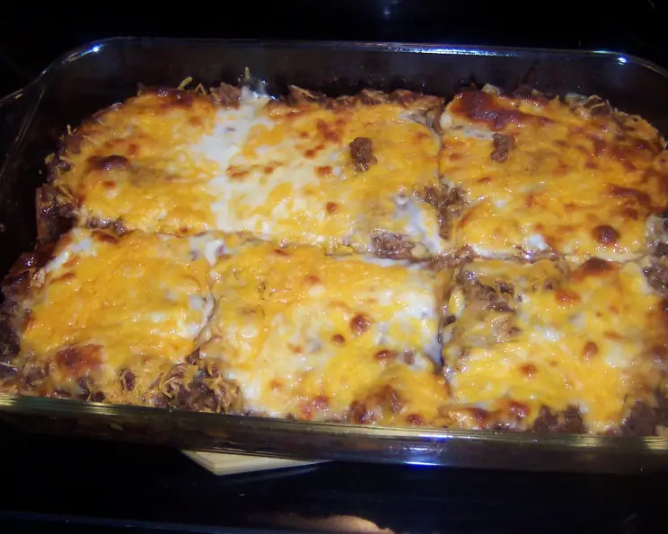

Burrito Bake
Homepage

Delicious Baked Burrito Casserolle
Prep time: 15 minutes
Total time: 1 hour
Yield: 11 servings
Calories: 616/serving
Necessary Ingredients:
- 1 lb. ground beef
- 1 16oz. can of refried beans
- 1 1/4 oz. pouch of taco seasoning
- 1 pack of 8 inch flour tortillas
- 16 oz. shredded cheese (I like using the fiesta blend cheese)
- 16 oz. of thick chunky salsa
- 16 oz. of taco sauce
Instructions
- Preheat oven to 350° and lightly grease bottom of a 13x9 baking glass baking pan
- Brown beef in a skillet and drain excess grease
- Add taco seasoning per packet instructions
- in Casserolle dish place 2 tortillas and spread refried beans to lightly cover tortillas
- add a scoop of the taco beef, about 1/5 cup of salsa and taco sauce, and a handfull of cheese, then spread evenly
- repeat for 3 layers. All of the meat and beans should be on the first 3 layers.
- for the final layer, spread the remaining cheese, salsa, and taco sauce evenly
- Use a spatula to tuck excess tortilla all the way around the dish
- Bake at 350 for 45 minutes
Homepage